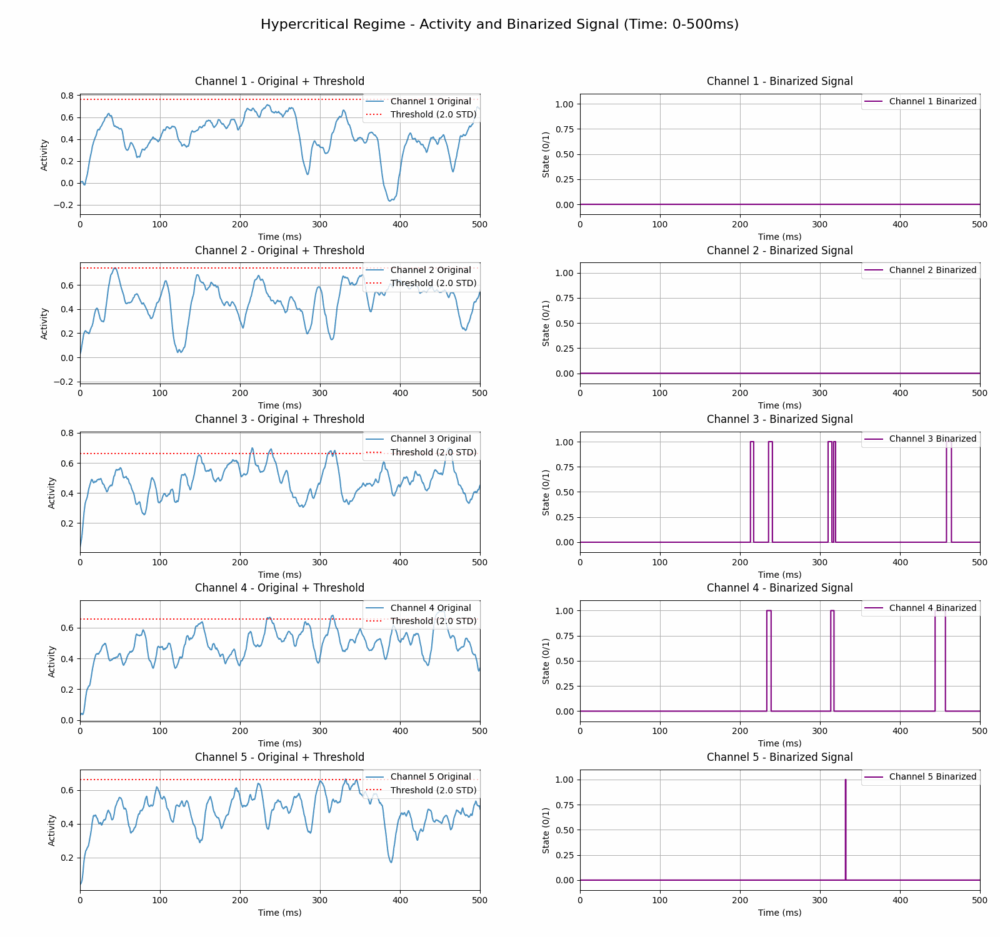

GitHub Repository
About
This project investigates the dynamics of the stochastic Wilson-Cowan model, focusing on critical behavior, brain avalanches, and higher-order interactions (HOI). Using computational models and empirical datasets, we aim to better understand how brain networks operate near criticality and how these dynamics relate to neural computation and function.
Folder Structure
.
Repo_Root/
├── data/ # All generated and input data files
│ ├── hcp/ # HCP dataset with Cmat and Dmat (loaded by neurolib)
│ └── simulated/ # Simulated patient data
├── scripts/ # Python scripts for simulations and analysis
├── results/ # Outputs (e.g., avalanche stats, HOI results, plots, gifs)
├── Images/ # Figures and illustrations
└── README.md
Illustration
Wilson-Cowan Brain Model GIF Generator
Simulation of a Wilson-Cowan whole-brain model using Human Connectome Project (HCP) connectivity data. It is specifically configured to run in the Hypercritical regime.
The script visualizes the neuronal activity by:
- Simulating brain dynamics.
- Binarizing the excitatory (
exc) signal for each channel based on a dynamic threshold. - This GIF displays both the raw and binarized signals for the first 5 channels over a sliding time window.

References
- Wilson-Cowan Model: De Candia, A., et al. (2021). Critical Behaviour of the Stochastic Wilson-Cowan Model. PLOS Computational Biology. https://doi.org/10.1371/journal.pcbi.1008884
- Neurolib: Official documentation available at https://neurolib-dev.net/docs/
- Wilson-Cowan and Criticality: Golpayegan, H. A., & De Candia, A. (2023). Bistability and Criticality in the Stochastic Wilson-Cowan Model. Physical Review E. https://doi.org/10.1103/PhysRevE.107.034404
- Brain Avalanches: Larremore, D. B., et al. (2012). Statistical Properties of Avalanches in Networks. Physical Review E. https://doi.org/10.1103/PhysRevE.85.066131
- Higher-Order Interactions: Hindriks, R., et al. (2024). Higher‐order Functional Connectivity Analysis of Resting‐state fMRI Using Multivariate Cumulants. Human Brain Mapping. https://doi.org/10.1002/hbm.26663
Authors & Contact
Diego Alejandro Hernández Castañeda
PhD Student, Systems and Computing Engineering
Universidad Nacional de Colombia
Email: dieahernandezcas@unal.edu.co
Prof. Francisco Albeiro Gómez Jaramillo, PhD
Associate Professor, Mathematics Department
Universidad Nacional de Colombia
Email: fagomezj@unal.edu.co
Prof. Prejaas Kavish Baldewpersad Tewarie, PhD
Clinical Physician and Teaching Assistant Grant Holder
CERVO Brain Research Centre, Université Laval
Email: Prejaas.KBTewarie@cervo.ulaval.ca